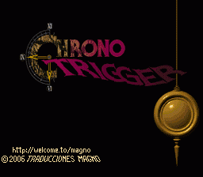

| 1. | Principal |
| 2. | Cajas y Manuales SNES |
| 3. | Proyectos |
| 4. | Documentación |
| 5. | Utilidades |
| 6. | Enlaces |
CHRONO TRIGGER al 101.0%
Después de casi 4 años desde que di por definitivo el parche, y gracias a la aportación de mucha gente (RexMike, Jorge Pérez), decidí retomar la traducción para corregir dichos fallos (realmente eran minucias en textos colaterales a la historia) y para mejorar algunas cosas que no me terminaron de convencer: retoqué la rutina VWF para reajustar el tamaño de todas las letras par que quedaran lo más juntas posibles (ahora queda infinitamente mejor), cambié todas las descripciones de los objetos y armaduras para que ahora no tuvieran esas horribles abreviaturas y reflejaran correctamente qué efectos tienen, y me puse a descomprimir los gráficos para traducirlos; así, los textos de la ruleta del tiempo (que son sprites y tengo poca experiencia en su modificación) ya están traducidos, los letreros de los elementos "Luz", "Agua", "Fuego", "Sombra", los cartelitos del tiempo y el letrero de "Fin". Todas estas son las mejoras que incorpora este último parche de la era Chrono Trigger, que considero que será el definitivo para siempre, ya que los objetivos que me había marcado al principio han sido cubiertos por fin.
Espero que aquellos que la descarguéis disfrutéis con ella al máximo, y aquellos que ya tenían la versión anterior, que no se preocupen porque este parche aporta mejoras estéticas a aquella versión. Podemos decir que esta es la versión que yo me volcaría a una ROM para tener el cartucho traducido al castellano, ya que además, tiene el checksum corregido para que no se queje la SNES.
¡AH! Y ya he cambiado "pendiente" por "colgante", para mantener la
fidelidad total con el original.
Para usar el parche que os hayáis bajado tenéis dos opciones:
- Ponéis la ROM y el parche en el mismo directorio y con el mismo nombre de archivo pero con las extensiones .SMC y .IPS, respectivamente. Simplemente tendréis que cargar la ROM en Snes9X o ZSnes para poder jugar en castellano. En este caso, la ROM seguirá estando en japonés/inglés y si quitáis el parche de la carpeta donde está, volveréis a jugar al juego en el idioma original de la ROM.
- Utilizáis el SNESTool que podéis conseguir en la sección de Utilidades y lo usáis para parchear la ROM. Abrís el programa y elegís la opción "Use IPS". Buscáis el parche en vuestro disco duro en la ventana de la izquierda del SNESTool y le dais a INTRO. Inmediatamente a eso, buscáis la ROM en esa misma zona izquierda y le dais a INTRO. Ya tendréis la ROM parcheada PARA SIEMPRE en castellano. Este proceso es irreversible, con lo que haced una copia de la ROM original por si acaso. El juego lo podréis cargar entonces en cualquier emulador.
Versión 100.7%:
Esta versión del parche, la 100.7% sólo introduce un cambio respecto a la versión 100.6%, que permite jugar el juego a 60 fps en emuladores que no detecten de forma correcta el modo NTSC del juego. Muchas gracias a Pelagio por lo "pesado" que ha sido con este tema ;)
Versión 100.8%:
La versión 100.8% recoge las modificaciones de la versión 100.7% y corrige algunas cosas sin importancia: se traducen todos los créditos al castellano, se han cambiado algunos elementos gráficos, se traduce el mensaje final cuando Lavos te mata y he insertado un pequeño logo en la pantalla de inicio. La mayor diferencia es que ahora el parche se tiene que aplicar sobre la versión SIN CABECERA de la ROM; para más información e instrucciones precisas de cómo obtener la ROM adecuada, consultad el archivo de texto que acompaña al parche en el ZIP.
Versión 100.9%:
La versión 100.9% corrigen un molesto bug gráfico que se producía al cerrar ciertos diálogos y que consistía en un leve pero visible parpadeo. Estaba ocasionado por la modificación de las transferencias H-DMA para crear la fuente 8x16 y permitir las mayúsculas tildadas.
Última Versión:
La versión 101.0% corrigen un bug gráfico que se produce en la intro cuando el péndulo está oscilando. Se debía al logo que había añadido, que al pasar la capa a Modo7 salía basura procedente de otras partes de RAM. Además, corrige 2 diálogos del juego que estaban en blanco; estos aparecían en la primera vez que se viaja al futuro.
|
 |
Letras Especiales: á. é, í, ó, ú, ñ, Á, É, Í, O, Ú, Ñ, ¡, ¿ Porcentaje Completado: 101.0% Tamaño Parche: 154 Kbytes Fecha Parche: 22/03/2010 |
Lo que ya está hecho:
- Pues casi todo.
- Cambiada la palabra "pendiente" por su traducción correcta "colgante" en todo el juego
- Corregida la separación inadecuada entre las letras que no deban un aspecto demasiado profesional a la traducción.
- Numerosas faltas tipográficas y expresiones que sonaban "raras".
- Ampliadas la descripciones de los objetos y armaduras para quitar las horribles abreviaturas y reflejar los efectos que tienen sobre el personaje.
- Traducidos los letreros gráficos de los elementos, el letrero de "FIN", los textos de la ruleta y los carteles del mapa que indican la fecha.
- Traducidos los créditos del final al castellano.
- Traducido el letrero gráfico cuando te mata Lavos.
- Modificados algunos elementos gráficos.
- Añadidas las mayúsculas tildadas.
- Añadido un logo en la pantalla de inicio del juego
- Modificado un molesto parpadeo producido en la versión 100.8% por error.
- Eliminado el bug gráfico en la intro causado por el logo de "TRADUCCIONES MAGNO"
Lo que queda por hacer:
- NADA.